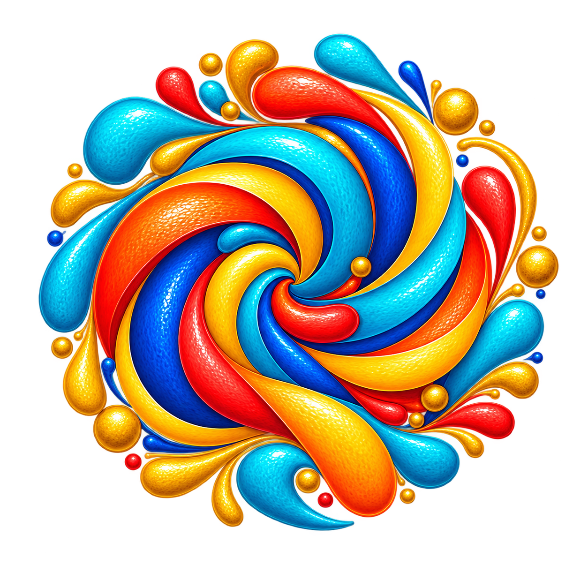

Created by Ali Heathfield, the Living Life Well Model is what the books, the workbooks and the three paths are all built on: ten interconnected themes, and one whole life.
The Living Life Well Model is a framework for living well after 60. Rather than focusing on a single problem in isolation, health, or money, or purpose, it looks at life as a whole, across ten interconnected themes.
Most advice about later life narrows in on one area at a time. The Model starts from a different premise: these areas don't operate separately. A change in one, a health diagnosis, a house move, an empty nest, tends to ripple into several others. Seeing the whole picture makes it easier to recognise where your attention will actually help.
Ali Heathfield developed the Living Life Well Model from her own experience of a threshold moment in later life, alongside an MSc in Positive Psychology with Distinction and decades of coaching experience working with people through transition and growth.
Read Ali's story →The ten themes are organised into three groups, each playing a different role in how a life fits together.
Set the tone for everything else. Self, Narrative, and Meaning & Purpose.
The practical realities we're working within. Environment, Health, and Finance.
The visible structure of daily life. Activities & Interests, Relationships, Community, and Planning.
These areas don't sit separately. Strengthening one, taking on a new activity, joining a group, having an honest conversation, often affects several others too. When one or more themes need attention, everything tends to feel harder.
The Model won't tell you what your life should look like. It helps you see the whole picture, and decide for yourself where your attention may be most useful right now.
The Model is designed as a map, not a prescription.
The Model can be used in different ways depending on what is happening in your life. Three practical paths have been developed to help you navigate different circumstances.